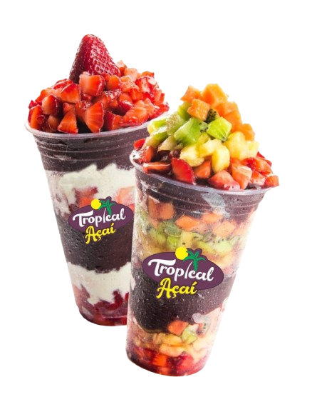
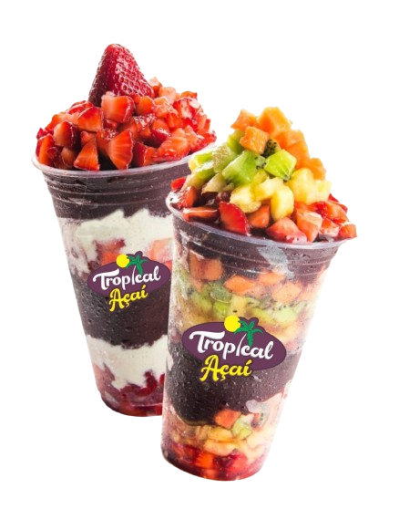

O calor aumentou?
Então aproveita que o açaí chegou.
Eu, você e um açaí: bora?
Com o passar do tempo, o açaí começou a ganhar visibilidade
especialmente nas grandes cidades brasileiras. Inicialmente, era consumido
principalmente por atletas e pessoas em busca de uma
alimentação saudável e energética. Aos poucos, sua fama se espalhou e o açaí se
tornou um fenômeno gastronômico, presente em lanchonetes, restaurantes e barracas
de sucos em todo o país.
Saiba mais
 
